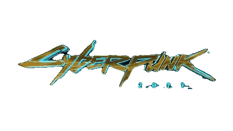
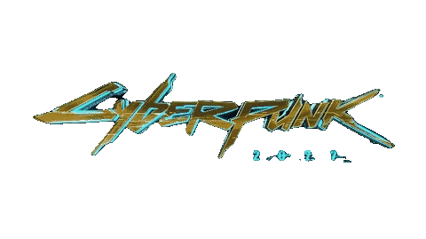

Anime e dlc
Anime Cyberpunk: Mercenários
Conteúdo ↓Para sobreviver em uma realidade distópica na qual a corrupção e os implantes cibernéticos controlam tudo, um jovem talentoso e impulsivo decide se tornar um mercenário.

Cyberpunk: Mercenários é um anime de ficção científica produzido pela Netflix e pelo Studio Trigger, baseado no game Cyberpunk 2077 da CD Projekt RED. A série tem 10 episódios e foi lançada em setembro de 2023.
A história se passa em Night City, uma cidade futurista onde a tecnologia e as modificações corporais dominam a sociedade. O protagonista é David, um garoto de rua que vive em um apartamento precário com sua mãe. Ele sonha em escapar da pobreza e da violência, e se diverte com a neurodança, uma forma de entretenimento virtual que estimula os sentidos.
A série acompanha as aventuras e os conflitos de David e seus companheiros, que enfrentam inimigos poderosos, como as megacorporações Arasaka e Militech, as gangues de rua, os policiais corruptos e os ciberpsicóticos, pessoas que perderam a sanidade por causa dos implantes cibernéticos.
Cyberpunk: Mercenários é um anime cheio de ação, suspense, drama e humor, que explora temas como a identidade, a liberdade, a moralidade, a violência e o amor em um mundo distópico. O anime tem um visual impressionante, com um estilo vibrante e colorido, que contrasta com a atmosfera sombria e decadente de Night City. A trilha sonora é composta por Akira Yamaoka, que trabalhou na série Silent Hill, e combina elementos de rock, eletrônica e música oriental.
Se você gostou dessa descrição e quer saber mais sobre Cyberpunk: Mercenários, confira os dois vídeos trailer do anime abaixo:DLC Cyberpunk 2077: Phantom Liberty
Conteúdo ↓Cyberpunk 2077: Phantom Liberty é a primeira e única expansão do jogo de RPG de ficção científica da CD Projekt Red. Nela, você assume o papel de V, um mercenário que busca a cura para um vírus neurochip que ameaça sua vida. Para isso, você se envolve em uma missão de espionagem de alto risco em Dogtown, uma nova área de Night City que abriga a sede da corporação Liberty. Lá, você terá que lidar com novos inimigos, aliados, armas, veículos e escolhas que podem mudar o destino de V e do mundo.

Phantom Liberty é integrada diretamente ao jogo base, o que significa que você pode começar a jogá-la a qualquer momento após o início do Ato 2. No entanto, a melhor forma de aproveitar a expansão é esperar até desbloquear a missão do Ato 3 “Nocturne Op55N1”, que é um ponto de não retorno. Assim, você poderá acessar um novo final para a campanha principal, que depende das suas decisões em Phantom Liberty.
Phantom Liberty também traz diversas melhorias e novidades para Cyberpunk 2077, graças à atualização 2.0, que é gratuita. Entre elas, estão mecânicas renovadas, gráficos mais caprichados, correção de bugs e glitches, e uma nova interface de usuário. Além disso, a expansão oferece cerca de 15 horas de conteúdo adicional, com muitas missões, personagens, diálogos e segredos para descobrir.
Se você é fã de Cyberpunk 2077, Phantom Liberty é uma ótima oportunidade de mergulhar novamente no universo do jogo e explorar uma nova faceta de Night City.
Mais sobre Phantom Liberty ↓Comprar Cyberpunk 2077
Plataformas:

Cyberpunk 2077
CD PROJEKT RED • RPG
R$ 350,00
*---*
↓